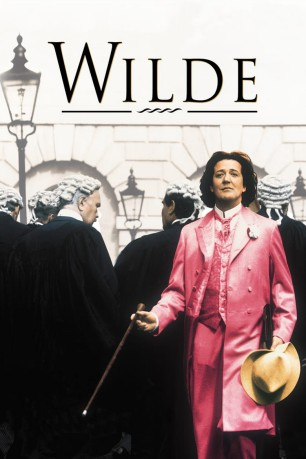

#11118 Oscar Wilde
Alternativ: Wilde (Englischer Titel)
 
 IMDB-Wertung: 6.9 / 10
IMDB-Wertung: 6.9 / 10  Metascore: 0
Metascore: 0 
Der Film beginnt während Wildes Besuch in den USA und zeigt seine Rückkehr nach London, wo er Constance Lloyd heiratet und mit ihr zwei Söhne bekommt. EIn wichtiges Thema ist auch Wildes Homosexualität, die er mit der Zeit immer weniger ignorieren kann.
Jahr: 1997
Dauer: 116 Minuten
FSK: 12
Land: England Studio: Arthaus FilmverleihTonspuren:
Untertitel: Deutsch,
Auflösung: 1080p (1920x816) Größe: 10065 MB
Genre: Drama, Liebe, Biographie
Regisseur: Brian Gilbert
Drehbuch: Julian Mitchell, Richard Ellmann
Soundtrack: Debbie Wiseman
Darsteller:
 Stephen Fry als Oscar Wilde
Stephen Fry als Oscar Wilde Jude Law als Lord Alfred Douglas
Jude Law als Lord Alfred Douglas Vanessa Redgrave als Lady 'Speranza' Wilde
Vanessa Redgrave als Lady 'Speranza' Wilde Jennifer Ehle als Constance Wilde
Jennifer Ehle als Constance Wilde Gemma Jones als Lady Queensberry
Gemma Jones als Lady Queensberry Judy Parfitt als Lady Mount-Temple
Judy Parfitt als Lady Mount-Temple Michael Sheen als Robbie Ross
Michael Sheen als Robbie Ross- Zoë Wanamaker als Ada Leverson 'Sphinx'
 Tom Wilkinson als The Marquess of Queensberry
Tom Wilkinson als The Marquess of Queensberry Ioan Gruffudd als John Gray
Ioan Gruffudd als John Gray- Peter Barkworth als Charles Gill
- Robert Lang als C.O. Humphreys
- Philip Locke als Judge
- David Westhead als Edward Carson
 Orlando Bloom als Rentboy
Orlando Bloom als Rentboy- Adam Garcia als Jones
 Joseph May als First Miner
Joseph May als First Miner James D'Arcy als First Friend
James D'Arcy als First Friend- Robin Kermode als George Alexander
 Andrew Havill als Algernon
Andrew Havill als Algernon- Biddy Hodson als Gwendolen
- Michael Simkins als Lord Illingworth
- Albert Welling als Arthur
 Sacha Bennett als Rent Boy (uncredited)
Sacha Bennett als Rent Boy (uncredited) Harry Fielder als Man in Courtroom (uncredited)
Harry Fielder als Man in Courtroom (uncredited)- Anthony Maddalena als Rent Boy (uncredited)
- Royston Munt als Carriage Driver (uncredited)
 Guy Standeven als Lady Windermere's Fan Cast Member (uncredited)
Guy Standeven als Lady Windermere's Fan Cast Member (uncredited)- Matthew Mills als Lionel Johnson
- Jason Morell als Ernest Dowson
- Jack Knight als Cyril Wilde
- Jackson Leach als Cyril Wilde, aged 4
- Laurence Owen als Vyvyan Wilde
- Benedict Sandiford als Alfred Wood
- Mark Letheren als Charles Parker
- Michael Fitzgerald als Alfred Taylor
- Bob Sessions als Mine Owner
- Jamie Lee als Second Friend
- Orlando Wells als Undergraduate
- Avril Elgar als Lady Bracknell
- Jean Ainslie als Miss Prism
- Judi Maynard als Mrs Allonby
- Hugh Munro als Chasuble
- James Vaughan als Hotel Manager
- Richard Cubison als Head Waiter
- Christine Moore als Nanny
- John Bleasdale als Warder
- Peter Forbes als Detective
- Peter Harding als Doorman at the Cadogan
- Edward Laurie als Cabman
Datei: X:\1997\Oscar Wilde (1997, FSK12, 1920x816).mkv seit 24.04.2019
Festplatte: Gemischt-01+Anime
 Es gibt insgesamt 83 Filme in der Gruppe '1997'
Es gibt insgesamt 83 Filme in der Gruppe '1997'